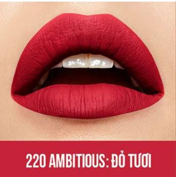

Gives you a flawless matte finish in a range of super saturated shades.
 Tap to tryIntensely perfect, perfectly intense. Ink your lips in up to 16 hours of saturated matte with Maybelline New York’s Super Stay Matte Ink™ Liquid Lipstick! This highly pigmented liquid matte lipstick features a unique arrow applicator for precise application. The formula is long-lasting and gives a flawless matte finish in 40 super-saturated shades ranging from classic red liquid lipstick to nude and bold bright lipstick shades. For easy removal, use with Maybelline's SuperStay Eraser lipstick remover. Now, earth tones get heated with new Super Stay Matte Ink Spiced Edition. Inspired by the energy of New York City.
DIMETHICONE TRIMETHYLSILOXYSILICATE ISODODECANE NYLON-611/DIMETHICONE COPOLYMER DIMETHICONE CROSSPOLYMER C30-45 ALKYLDIMETHYLSILYL POLYPROPYLSILSESQUIOXANE LAUROYL LYSINE ALUMINA SILICA SILYLATE DISODIUM STEAROYL GLUTAMATE PHENOXYETHANOL CAPRYLYL GLYCOL LIMONENE ALUMINUM HYDROXIDE PARAFFIN BENZYL BENZOATE BENZYL ALCOHOL CITRONELLOL PARFUM / FRAGRANCE [+/- MAY CONTAIN / PEUT CONTENIR CI 45410 / RED 28 LAKE CI 77891 / TITANIUM DIOXIDE CI 15850 / RED 7 CI 77491, CI 77492, CI 77499 / IRON OXIDES CI 45380 / RED 22 LAKE CI 15985 / YELLOW 6 LAKE CI 19140 / YELLOW 5 LAKE CI 42090 / BLUE 1 LAKE CI 15850 / RED 6 CI 17200 / RED 33 LAKE MICA] F.I.L. D197345/2
Apply liquid lipstick in the center of your upper lip and follow the contours of your mouth.
Glide the liquid lipstick across the entire bottom lip.
Allow product to dry. To Remove: Use Super Stay Matte Ink lipstick Remover.